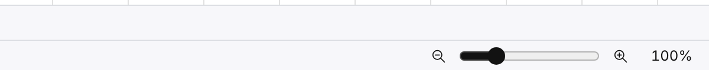
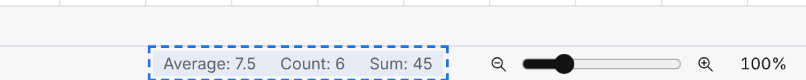
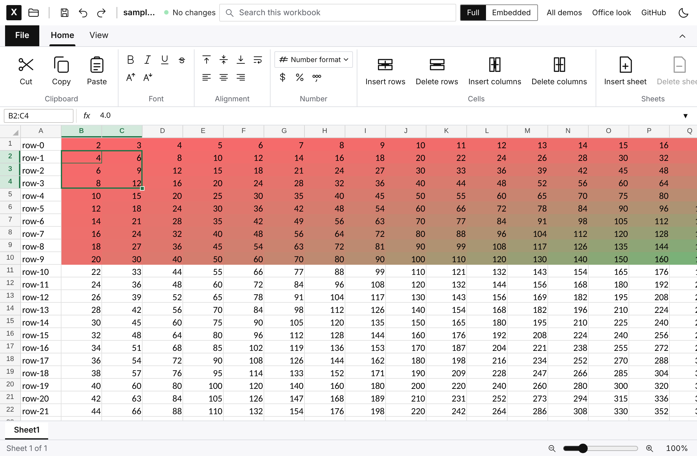

See Sum, Average and Count of any selection, right in the status bar
Open issue #540 to vote
Approve: tap 👍 on the issue · Decline: tap 👎
Close-up of the change




Full screen


Today: cells B2:C4 are selected, and the status bar only says "Sheet 1 of 1".

Mockup: the same selection shows Average 7.5 · Count 6 · Sum 45 at the bottom right, like Excel.
Tap an image to open it full size.
Why
In Excel, selecting a few cells instantly shows their total and average at the bottom right. It's one of the most-used glance features, and people expect it the moment they select numbers. Nitro already computes every cell value (formula values land with #534), so this is mostly a small status-bar readout.
EffortS about a day
RiskLow. Read-only display, no file changes, so save/round-trip can't break.
Perf / bundleAbout 1–2 KB in the lazily loaded Excel chunk; nothing added to the first-load loader (it has 0 B headroom). Large selections are summed on idle with a cell cap so selecting a whole column stays smooth.
Definition of done
- Selecting 2+ cells with at least one number shows Average, Count and Sum in the status bar, formatted like the cells (e.g. currency stays currency).
- Single cell or no numbers: the readout hides, like Excel.
- Updates on edit, undo/redo and paste; works in Full and Embedded modes.
- Playwright test for B2:C4 → Average 7.5, Count 6, Sum 45; bundle-budget and all required checks stay green.
Open issue #540 to vote
Approve: tap 👍 on the issue · Decline: tap 👎